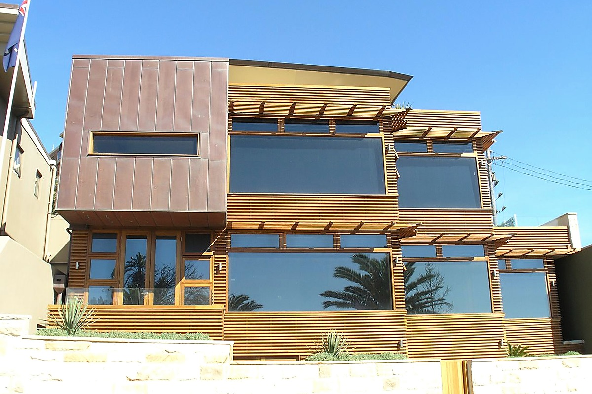
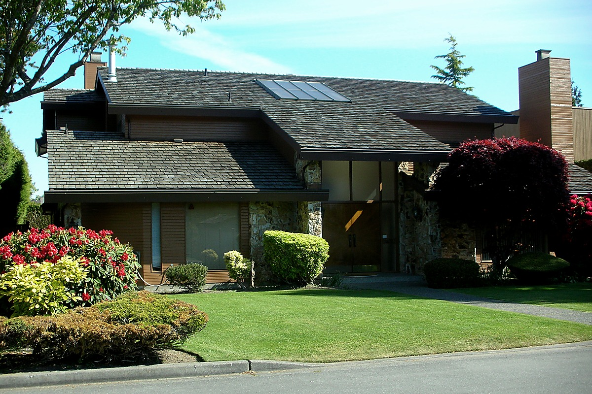
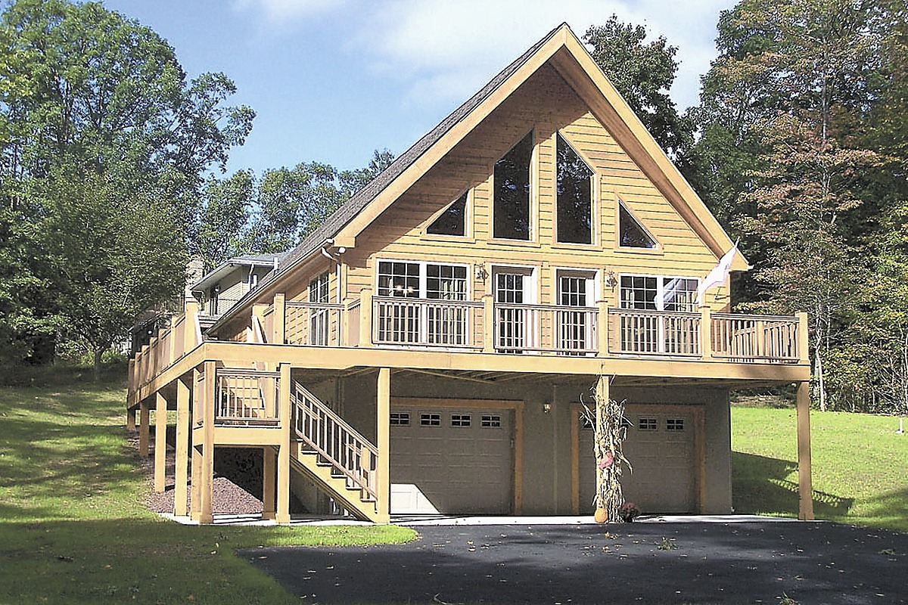
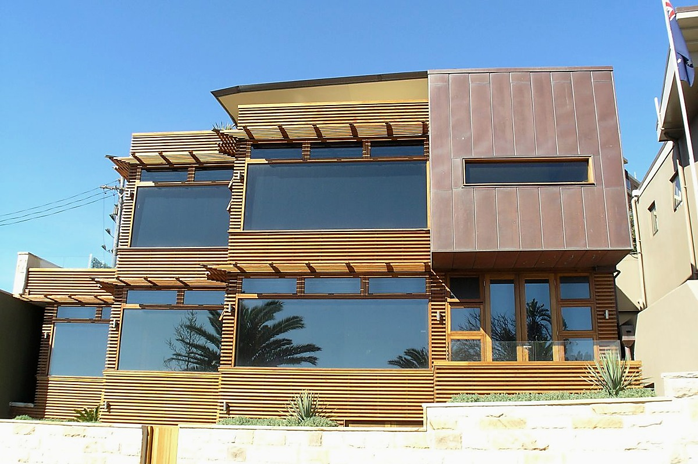

NEW
3,680万円
末広町の海を望む家
函館市 / 3LDKPROPERTY
函館・北斗・七飯の暮らしに合う住まいをご紹介します。
8件の物件
末広町の海を望む家
函館市 / 3LDK
湯川町の庭付き住宅
函館市 / 4LDK
大きな窓の平屋住宅
北斗市 / 2LDK
自然に囲まれた住まい
七飯町 / 3LDK
五稜郭エリアの新築
函館市 / 3LDK
家族で過ごす南向きの家
北斗市 / 4LDK
大沼を望むデザイン住宅
七飯町 / 3LDK
元町のリノベーション住宅
函館市 / 2LDK条件に合う物件がありません。